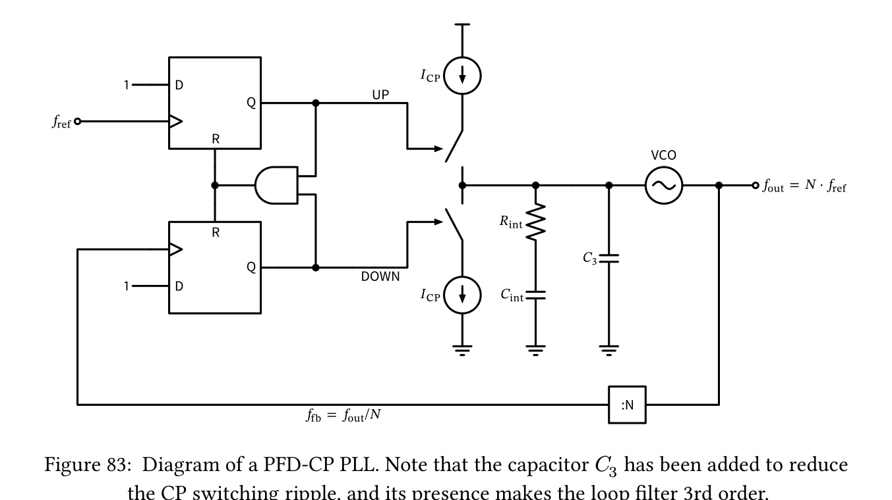

跟踪一轮完整闭环
REF 和 FB 的上升沿改变 PFD 状态；泵电流改变电容电压，串联电阻提供瞬时电压步进。VCO 的瞬时频率积分为相位，整走 N 圈就触发下一次 FB 边沿。


以下事件模型固定参考 40 MHz、N=125、CP 100 µA、C=100 pF、R=4.7 kΩ，电容初值 0.9 V。PFD 两路到齐即复位。表中 VCTRL 是事件发生后的值；用频率在事件之间的变化计算下一次反馈边沿。
| t (ns) | 事件 | UP | DN | VCTRL (V) | 频偏 (MHz) |
|---|
先用负频偏看第一对边沿，再把频偏调到正值。预测第一条脉冲是充电还是放电，然后核对表格。